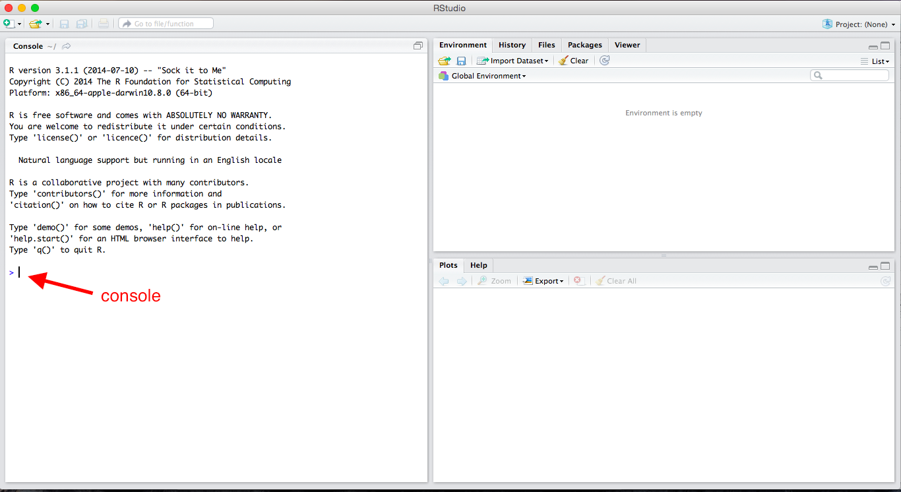
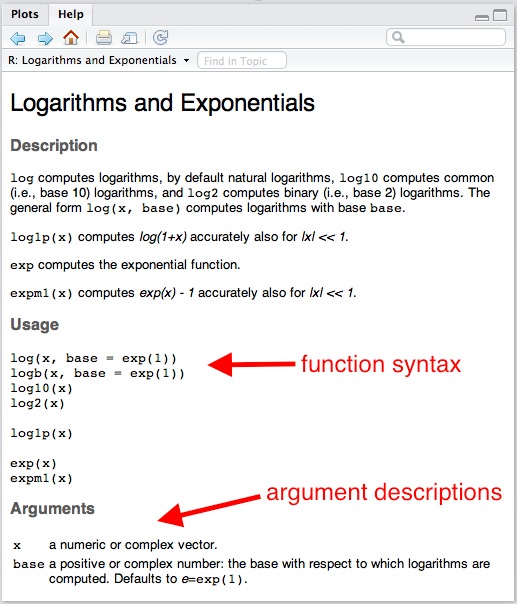
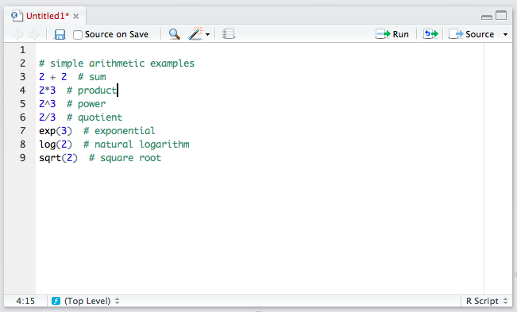

2 + 2[1] 42*3[1] 62^3[1] 82/3[1] 0.6666667exp(3)[1] 20.08554log(2) # this is the natural log[1] 0.6931472sqrt(2)[1] 1.414214R is a complex, powerful statistical programming language. It’s also free! I use R to do all my empirical and methodological work. I use R to wrangle data, fit statistical models, perform simulation studies, and draw graphics.
R works via scripts. The user writes a program called a “script” or program; R executes the program. This might intimidate you a little. That’s okay. It’s easier than it sounds, and Rob (our fantastic TA) and I (your mediocre professor) are here to help you.
We’ll learn a lot about R this semester, but we’ll learn only some aspects of R. I have to include some features of R and exclude others. Just because I show you one way to tackle a problem doesn’t mean it’s the only (or the best) way. But in order to get you working with data ASAP, we have to exclude some important concepts and tools from R.
This is important. I caution you against googling for help. I have put together a coherent sequence of skills. If you go off on your own, you’ll hop outside that sequence. Instead of seeking help elsewhere, refer back to my notes, and ask me and Rob questions.
Rather than use R directly, we’ll use RStudio to manage and run our R programs. RStudio is simply a way to organize our R code. A good analogy is a desk—RStudio helps us keep our desk neat and tidy while we work. I use RStudio for all my R programming. I even use RStudio to write documents and make presentations using R Markdown. I write my notes and build my course websites with RStudio.
To make things even simpler, we’re going to use RStudio in the cloud. This avoids lots of issues with setting up your computer for statistical computing. The only downside is that the cloud is noticeably slower than a local installation of RStudio.
To get started with R, open up RStudio and look around. If you want, you can use R like a calculator—just type directly into the console as you would a calculator.

[1] 4[1] 6[1] 8[1] 0.6666667[1] 20.08554[1] 0.6931472[1] 1.414214Review Exercises
Using R as a calculator, calculate the following (in the console):
Ultimately, we’ll want to write all of our code in scripts so that we can modify, reproduce, and check our work. From now on, almost everything we do will go in a script. The idea is not to do an analysis, but to write a script that can do an analysis for us.
To open a new R script, click File → New File → R Script. You can type lines of code directly into this script. In the upper-right corner of the script window, you’ll see a Run button. This runs the entire line that the cursor is currently on or all the highlighted lines. This is equivalent to Command + Enter (or Control + Enter on Windows). Unless the script takes a long time to run (and I don’t think any of ours will), I recommend hitting Command + A (or Control + A on Windows) to highlight the entire script and then Command + Enter (Control + Enter on Windows) to run the entire script. You need to get into the habit of running the entire script, because you want the entire script to work in one piece when you are done. It is much easier to do this if you’re running the entire script all along.
ProTip: To run your code, press Command + A (or Control + A on Windows) and then press Command + Enter (or Control + Enter on Windows).
To save this script, click File → Save. I discuss where to save files a little later, but for now, just realize that R scripts will have a .R extension, such as my-script.R or important-analysis.R.
Doing your work in a script is important. You might have done a statistical analysis before or at least manipulated data with Excel. Most likely, you went through several steps and perhaps ended with a graph. That’s fantastic, but there are several problems.
Scripting solves each of these problems.
Scripting might seem like a lot more work. At first, it will be more work. By the end of the semester, it will be less work. As part of the papers you’ll write for this class, you’ll write a script.
R is much more powerful than a simple calculator, partly because it allows object-oriented programming. You can store things as “objects” to reference later. Just about anything can be stored as an object, including variables, data sets, functions, numbers, and many others.
Let’s start with a single number, sometimes called a “scalar.” Let’s create an object b that holds or contains the number 2. To do this, we use the assignment operator <-, which we read as “gets.”
We can be very creative with naming objects. Rather than b, we could have used myobject, myObject, my.object, or my_object. From a style perspective, I prefer my_object or important_variable. In general, you want to give objects descriptive names so that your code is easy to read, but short names so that the code is compact and easy to read and write.
ProTip: Give objects short, descriptive names.
We can now repeat some of the calculations from above, using b instead of two. Given that you know b equals two, check that the following calculations make sense.
[1] 5[1] 6[1] 8[1] 9[1] 0.6666667[1] 7.389056[1] 0.6931472[1] 1.414214You probably realize that it would be easier to just use 2 rather than b. But we’ll be doing more complicated calculations. Rather than b holding scalars, it might hold thousands of survey responses. Rather than applying a simple function, we might apply many functions.
So what is a function? In the above examples exp(), log(), and sqrt() are functions. Importantly, functions are followed immediately by parentheses (i.e., (), not [] or {}, which have different meanings). Arguments are supplied in the functions that tell the function what to do. We separate multiple arguments with commas.
You probably didn’t think about it at the time, but you can use many different bases when taking a logarithm. What base did we use when we ran log(b)? To see this, let’s open the help file.

The section “Usage” shows the typical function syntax. The log() function takes up to two arguments. The first argument x is a “numeric vector.” We’ll talk more specifically about numeric vectors below, but for now, we can consider a scalar as a numeric vector. If we provide the arguments in the same order that they appear in the function in the “Usage” section, then we do not have to name the argument, but we still can. For example, log(b) and log(x = b) are equivalent.
ProTip: If you need to know how to use a particular function such as
exp(), typehelp(exp)or?expinto the console.
You’ll also see from the help file that the default is base = exp(1), where exp(1) is just the number \(e\), the base of the natural log. This means that if you don’t specify base, it will use base = exp(1).
[1] 0.6931472[1] 0.6931472[1] 0.30103[1] 0.30103Notice that if we put the arguments in the proper order, we do not have to name the argument, so that log(b, base = 10) is equivalent to log(b, 10). However, the meaning of log(b, base = 10) is clearer, so I prefer that approach.
ProTip: If arguments are supplied to functions in the correct order, then names are unnecessary. However, names should be included whenever there might be doubt about the meaning of the argument. In practice, this most often means leaving the first argument unnamed and naming the rest.
Review Exercises
x the scalar 32.x rather than the number 2.If we can only work with single numbers, we won’t get very far.
When we do statistical computing, we’ll usually want to work with collections of numbers (or collections of character strings, like "Republican" or "Male"). In an actual problem, the collection might contain thousands or millions of numbers. Maybe these are survey respondents’ ages or hourly stock prices over the last few years. Maybe they are a respondent’s sex (i.e., "Male" or "Female") or party identification (i.e., "Republican", "Democrat", "Independent", or "Other").
We’ll call this collection of numbers or character strings a “vector” and we’ll refer to the number of elements in the vector as the “length” of the vector.
There are several types of vectors, classified by the sort of elements they contain.
numeric: contain numbers, such as 1.1, 2.4, and 3.4. Sometimes numeric variables are subdivided into integer (whole numbers, e.g., 1, 2, 3, etc.) and double (fractions, e.g., 1.47, 3.35462, etc.).character: contain character strings, such as "Republican" or "Argentina (2001)".factor: contain character strings, such as "Very Liberal", "Weak Republican", or "Female". Similar to character, except the entire set of possible levels (and their ordering) is defined.logical: contain TRUE and/or FALSE.Rather than the scalar 2, for example, we might want to work with the collection 2, 5, 9, 7, and 3. Let’s assign the collection above to the object a.
We can create a vector using the “collect” function c().
ProTip: To create a vector, one tool we can use is the “collect” function
c().
If we want to look at the object a, we need to enter a on a line by itself. This will print the object a for us to inspect. But since we only need to check this once, maybe we just type it in the console instead of including it in the script.
We can now apply functions to the vector a just like we did for the scalar b. In some cases, the function operates on each element of the vector (e.g., log()); in other cases, the function combines the elements into a new number (e.g., mean()).
[1] 5 8 12 10 6[1] 6 15 27 21 9[1] 8 125 729 343 27[1] 9 243 19683 2187 27[1] 0.6666667 1.6666667 3.0000000 2.3333333 1.0000000[1] 7.389056 148.413159 8103.083928 1096.633158 20.085537[1] 0.6931472 1.6094379 2.1972246 1.9459101 1.0986123[1] 0.3010300 0.6989700 0.9542425 0.8450980 0.4771213[1] 1.414214 2.236068 3.000000 2.645751 1.732051[1] 26[1] 5.2So far, we’ve only used numeric vectors—vectors that contain numbers. But we can create and work with other types of vectors as well. For now, let’s just illustrate two types: vectors of character strings, factors (and ordered factors), and logical vectors.
Review Exercises
my_vector.myOtherVector.sum() function to add the elements of my_vector together.sqrt() function to take the square root of the elements of myOtherVector.my_vector.Character strings are simply letters (or numbers, I suppose) surrounded by quotes, such as "Republican" or "Male". If we c() (i.e., “combine”) together multiple character strings, then we have a character vector.
[1] "Republican" "Democrat" "Republican" "Independent"Error in x * 3: non-numeric argument to binary operatorReview Exercises
sex.ideology.A factor vector is much like a character vector, but can only take on predefined values. While we might use a character vector to encode a variable that can have a variety of values (e.g., respondent’s name), we might use a factor to encode a variable that can take on just a few values, such as party identification (e.g., “Republican,” “Independent,” “Democrat,” “Other”). We refer to the possible values of a factor as the “levels.”
Creating a factor is trickier than creating a numeric or character vector. We might take several approaches, but I suggest the following two-step approach:
c().factor() function. We define the possible levels and their order by supplying a character vector to the levels argument.Factor vectors have two particular advantages over character vectors.
# create a character vector
pid <- c("Republican", "Republican", "Democrat", "Other")
# check type
class(pid)[1] "character"pid
Democrat Other Republican
1 1 2 We can fix these two problems by using a factor vector instead.
# create a factor vector in two steps
## step 1: create a character vector
pid_ch <- c("Republican", "Republican", "Democrat", "Other")
## step 2: add levels using factor()
pid_fct <- factor(
pid_ch,
levels = c("Republican", "Independent", "Democrat", "Other")
)
# check type
class(pid_ch)[1] "character"[1] "factor"pid_ch
Democrat Other Republican
1 1 2 pid_fct
Republican Independent Democrat Other
2 0 1 1 You can see that by creating a factor variable that contains the level information, we can see that we have no Independents in our sample of four respondents. We can also control the ordering of the categories.
Review Exercises
sex created above to a factor vector. Be sure to explicitly add the levels. The order does not matter. Assign this new factor variable to the object sex_factor.ideology created above to a factor vector. Be sure to explicitly add the levels. Use an intuitive ordering. Assign this new factor variable to the object ideology_factor.Logical vectors contain elements that are true or false. R has a special way to represent true and false elements. R uses TRUE (without quotes) to represent true elements and FALSE (again, without quotes) to represent false elements. To create a logical vector, we can c() together a series of TRUEs and/or FALSEs.
# create logical vector
x <- c(TRUE, TRUE, FALSE, TRUE, FALSE)
# print x
x # or you could use print(x)[1] TRUE TRUE FALSE TRUE FALSEReview Exercises
logic1.logic1 times 3. What do you get? Does that make sense?Missing data are extremely common in statistics. For example, a survey respondent might refuse to reveal her age or income. Or we might not know the GDP or child mortality rate for a particular country in a particular year. In R, we can represent these values with NA (“not available”). Notice that NA does not have quotes.
Different functions handle NAs differently. Some functions will drop missing values (e.g., compute the statistic using the non-missing data) and other functions will fail. Most of the simple functions that we’ll use at first will fail by default (e.g., sum(), mean()), but many of the more advanced functions we’ll use later (e.g., lm()) will drop missing values by default.
x <- c(1, 4, 3, NA, 2)
log(x) # doesn't fail: computes the log for observed data, returns NA for missing data[1] 0.0000000 1.3862944 1.0986123 NA 0.6931472[1] NA[1] 10Review Exercises
x using x <- c(1, 4, 3, NA, 2). Use mean() to find the mean of x with and without using the argument na.rm = TRUE. In a comment, explain why the results are different. Is na.rm = TRUE a reasonable choice?sum() rather than mean().Occasionally, we’d like R to test whether a certain condition holds. We’ll use this most often to choose a subset of a data set. For example, we might need only the data from the 100th Congress (from a data set that contains all Congresses) or only data before 1990 (for a data set that contains all years from 1945 to 2000).
The logical operators in R are <, <=, ==, >=, >, and !=. Notice that we must use ==, not =, to test for (exact) equality. We use != to test for inequality. We can use & to represent “and” conditions and | to represent “or.” Logical operators return either TRUE or FALSE.
| Operator | Syntax |
|---|---|
| “less than” | < |
| “less than or equal to” | <= |
| “exactly equal to” | == |
| “greater than or equal to” | >= |
| “greater than” | > |
| “not equal to” | != |
| “or” | | |
| “and” | & |
Try running some of the following. Make sure you can anticipate the result.
# less than
2 < 1
2 < 2
2 < 3
# less than or equal to
2 <= 1
2 <= 2
2 <= 3
# equal to
2 == 1
2 == 2
2 == 3
# greater than or equal to
2 >= 1
2 >= 2
2 >= 3
# greater than
2 > 1
2 > 2
2 > 3
# not equal to
2 != 1
2 != 2
2 != 3
# or
(1 > 2) | (3 > 4)
(1 < 2) | (2 > 4)
(1 < 2) | (3 < 4)
# and
(1 > 2) & (3 > 4)
(1 < 2) & (2 > 4)
(1 < 2) & (3 < 4)Review Exercises
Use logical operators to test whether each element of my_vector (created above) is…
Comments
You can also insert comments into R scripts. This is very important, especially when you are first learning to program. To insert a comment, type a pound or hash sign
#(i.e., “hashtag” to me) anywhere in the code. Anything on the line after the hash will be ignored. I’ll always carefully comment my R code, and I’ll be even more careful about it for this class. Here’s an example of some commented code for the previous example.